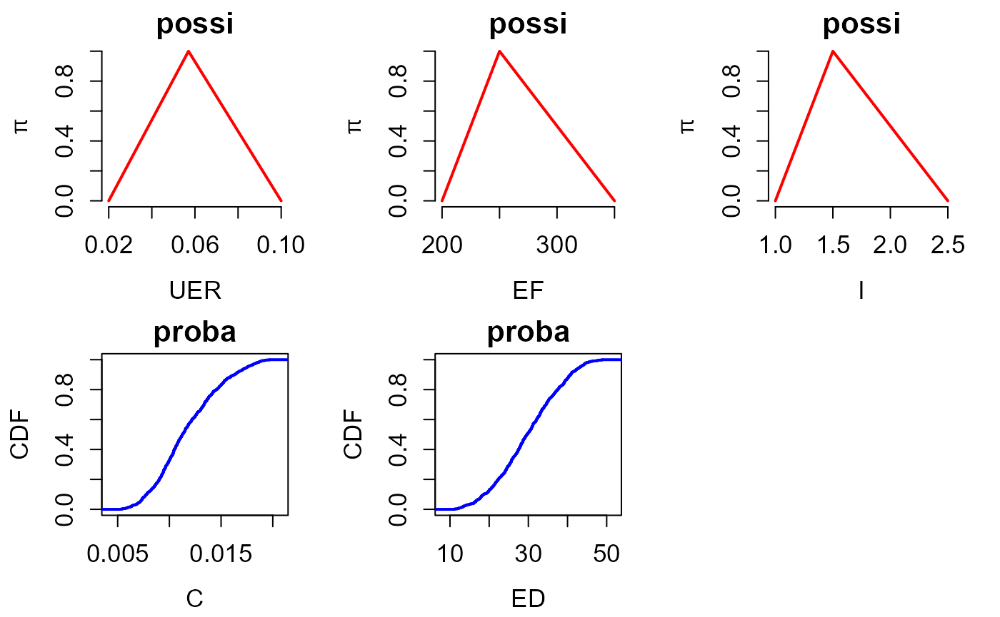
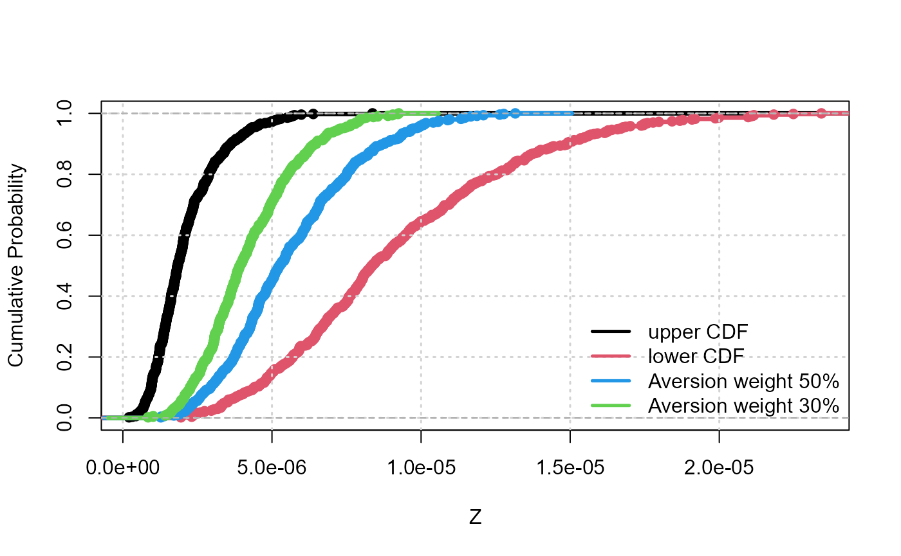

possibility.RmdTo showcase the use of the joint use of possibilities and probabilities with hyriskR, we use the health model of Dubois & Guyonnet (2011).
library(hyriskR)The assessment function is coded as follows:
FUN<-function(X){
UER = X[1]
EF = X[2]
I = X[3]
C = X[4]
ED = X[5]
return(UER*I*C*EF*ED/(70*70*365))
}The first step focuses on uncertainty representation. It aims at selecting the most appropriate mathematical tool to represent uncertainty on the considered parameter.
The procedure in hyriskR first uses the create_input function to define the input variables (imprecise, random or fixed). Second, the create_distr function assigns the corresponding distribution (probability or possibility) to each uncertain input.
In the case considered, the different parameters are either represented by probabilities (argument type=proba) or by possibilities, either triangular or trapezoidal, (argument type=possi). For instance, if type=“possi” and distr=“triangle”, the parameter is represented by a triangular possibility distribution. The param argument defines the triangle. For example c(0,1,2) corresponds to a possibility distribution with core={1} and support=[0,2]. If type=“possi” and distr=“trapeze”, param should be a vector of four values. For example c(0,1,2,3) corresponds to a possibility distribution with core=[1,2] and support=[0,3].
ninput <- 5 #Number of input parameters
input <- vector(mode = "list", length = ninput) # Initialisation
input[[1]] = create_input(
name = "UER",
type = "possi",
distr = "triangle",
param = c(2.e-2, 5.7e-2, 1.e-1),
monoton = "incr"
)
input[[2]] = create_input(
name = "EF",
type = "possi",
distr = "triangle",
param = c(200, 250, 350),
monoton = "incr"
)
input[[3]] = create_input(
name = "I",
type="possi",
distr="triangle",
param=c(1,1.5,2.5),
monoton="incr"
)
input[[4]] = create_input(
name = "C",
type = "proba",
distr = "triangle",
param = c(5e-3, 20e-3, 10e-3)
)
input[[5]] = create_input(
name = "ED",
type = "proba",
distr = "triangle",
param = c(10, 50, 30)
)
####CREATION OF THE DISTRIBUTIONS ASSOCIATED TO THE PARAMETERS
input = create_distr(input)
####VISU INPUT
plot_input(input)
The second step aims at conducting uncertainty propagation, i.e. evaluating the impact of the uncertainty pervading the input on the outcome of the risk assessment model. To do so, the main function is propag, which implements the Monte-Carlo-based algorithm of [@Baudrit07], named IRS (Independent Random Sampling), for jointly handling possibility and probability distributions and the algorithm of [@Baudrit08] for jointly handling possibility, probability distributions and p-boxes.
#OPTIMZATION CHOICES
choice_opt = "L-BFGS-B_MULTI" ## quasiNewton with multistart
param_opt = 25 ## 10 multistarts
#PROPAGATION RUN
Z0_IRS = propag(N = 500, input, FUN, choice_opt, param_opt, mode = "IRS")The output of the propagation procedure then takes the form of N random intervals of the form \([\underline{Z}_k,\overline{Z}_k]\), with \(k=1,...,N\). This information can be summarized in the form of a pair of upper and lower cumulative probability distributions (CDFs), in the form of a p-box which is closely related to upper and lower probabilities of Dempster, and belief functions of Shafer as proposed by Baudrit et al. 2007. The following code provides the output of the propagation phase using the plot_cdf function. In some situations, the analysts may be more comfortable in deriving a unique probability distribution. In order to support decision-making with a less extreme indicator than using either probability bounds, Dubois and Guyonnet 2011. proposed to weight the bounds by an index \(w\), which reflects the attitude of the decision-maker to risk (i.e. the degree of risk aversion) so that the resulting distribution \(F\) holds as \(F^{-1}(x) = w.\overline{F}^{-1}(x)+(1-w).\underline{F}^{-1}(x)\) where \(x\) is the quantile level ranging between 0 and 1. This can be done using the summary_1cdf function as follows using two aversion weight values of respectively 30 and 50\(\%\).
#Visualisation
plot_cdf(Z0_IRS, xlab = "Z", ylab = "Cumulative Probability", main = "", lwd = 3.5)
grid(lwd = 1.5)
#Summary with one CDF
Z50 = summary_1cdf(Z0_IRS,aversion=0.5)##risk aversion of 50%
lines(ecdf(Z50), col=4, lwd = 3.5)
Z30 = summary_1cdf(Z0_IRS,aversion=0.3)##risk aversion of 30%
lines(ecdf(Z30), col = 3, lwd = 3.5)
legend("bottomright",c("upper CDF","lower CDF","Aversion weight 50%",
"Aversion weight 30%"),col=c(1, 2, 4, 3),lwd = 2.5, bty = "n")
The functionalities of hyriskR enable to summarise the p-box depending on the statistical quantity of interest supporting the decision making process.
#Interval of quantiles
level = 0.75##quantile level
quant = quan_interval(Z0_IRS, level)
print(paste("Quantile inf: ", quant$Qlow))
#> [1] "Quantile inf: 2.66978458934162e-06"
print(paste("Quantile sup: ", quant$Qupp,2))
#> [1] "Quantile sup: 1.15323767887923e-05 2"
#Global indicator of uncertainty
unc = uncertainty(Z0_IRS)
print(paste("Epistemic uncertainty : ", unc, sep=""))
#> [1] "Epistemic uncertainty : 0.000695289118416515"